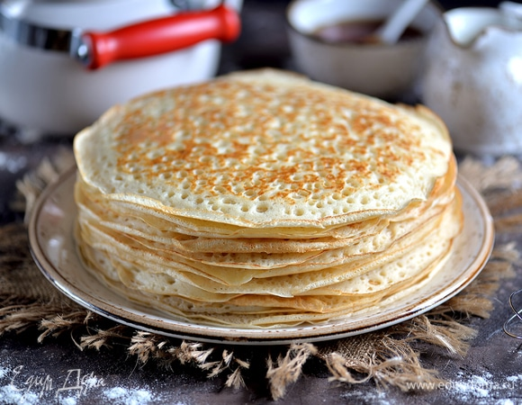

Рецепт блинчиков

Вам понадобится:
- Литр молока
- 6 яиц
- 2 столовые ложки сахара
- 1 маленькая ложка соли
- 6 столовых ложек подсолнечного масла
- 2 стакана муки
Процесс приготовления:
- В большой миске взбить яйца и сахар.
-
Часть молока подогреть, посолить и тщательно перемешать со взбитыми
яйцами и сахаром.
-
В полученную смесь постепенно добавлять муку, постоянно перемешивая,
чтобы не было комочков.
- Добавить немного соды, соль и масло. Перемешать.
-
Добавить остальное молоко и взбить. Тесто должно быть в меру жидким.
- Разогреть сковороду.
- Обжарить блин с обеих сторон до золотистого цвета.